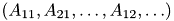
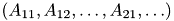

VLFeat -- Vision Lab Features Library
- Version:
- 0.9.5
- Copyright © 2007-09 Andrea Vedaldi and Brian Fulkerson
We strive to make the library free of clutter, portable (VLFeat is largely C-89 compatible), and self- documented. Different parts of the library are weakly interdependent, simplifying understanding and extraction of code.
Contents
- Design Concepts
- Glossary
- Support functionalities
- Algorithms
VLFeat Design Concepts
VLFeat follows a simple but rigorous design that makes it portable and simple to use in conjunction with high level language such as MATLAB. This section illustrates and motivates the aspects of the design that are relevant to the users of the library. Most of the features discussed in here are implemented in the generic.h module.Objects
Most of VLFeat functionalities are implemented as opaque data structures, to which we refer as "objects". Typically, you create an object by means of a constructor function and dispose of it by means of a destructor function. The data member of the object should not be accessed directly, but by means of appropriate accessor functions (typically containing the_get and _set keywords in their names).Memory and Resource Management
Resource management in VLFeat is minimal. In most cases, you can assume that VLFeat does not provide any resource management functionality at all. Objects or memory blocks allocated by the library but owned by the client must be explicitly disposed. The following rule helps identifying such blocks and objects:
The client owns a memory block or object if, and only if, it is returned by a library call containing the keywords _new or _copy, or by the allocator functions vl_malloc, vl_calloc, vl_realloc.
More in detail, the following rules apply:
- Memory is the only managed resource. Other resources used by the library (e.g. files) are either passed to the library by the client, or acquired and released within the scope of a library function call.
- The memory manager can be customized through vl_set_alloc_func (which sets the implementations of vl_malloc, vl_realloc, vl_calloc and vl_free). The library allocates memory only through these functions.
- The memory manager is global to all threads.
- At any moment, there is only one memory manager in existence. vl_set_alloc_func can be used only before any other function is invoked, or right before or after the previous memory manager has relinquished all memory.
- Such rules apply both to the library client and to the library implementation. The only exception regards the memory allocated in the global library state, which uses the native memory manager.
These rules make it possible to undo all the work done by the library at any given instant. Disposing the memory allocated by the custom memory manager essentially "resets" the library (except for its global state). This functionality is used extensively in the implementation of MATLAB MEX functions that access the library to support abrupt interruption.
- Note:
- The rules guarantee that all memory allocated by the library at any given time is allocated by the same memory manager, except for the global state that should survive the "reset" operation. In order to support multiple memory managers, one should keep track of the allocator of each object (or memory block). Moreover, partial de-allocation of a pool of objects is dangerous, as such objects may be referred by other objects that are not being de-allocated, corrupting their state. A proper solution to the latter problem is the retain/release mechanism implemented, for instance, by Apple Core Foundation or Cocoa.
Multi-threading
The library is currently not thread safe, but this support will be added in a future release.The library is almost entirely reentrant. The only thread-sensitive operations are on the global library state and are limited to:
- Global library configuration (e.g. vl_set_alloc_func).
- Random number generator state (random.h).
- Error handling (e.g. vl_err_no).
Portability features
Platform dependent details are isolated in the generic.h library module. These include:
- Atomic types (e.g. vl_int32).
- Special syntaxes for the declaration of symbols exported by the library and inline functions (e.g. VL_EXPORT).
- Host-dependent conversion of data endianess (e.g. vl_swap_host_big_endianness_8()).
VLFeat uses processor specific features (e.g. Intel SSE) if those are available at compile time.
Glossary
- Column-major. A M x N matrix A is stacked with column-major order as the sequence . More in general, when stacking a multi dimensional array this indicates that the first index is the one varying most quickly, with the other followed in the natural order.
- Opaque structure. A structure is opaque if the user is not supposed to access its member directly, but through appropriate interface functions. Opaque structures are commonly used to define objects.
- Row-major. A M x N matrix A is stacked with row-major order as the sequence . More in general, when stacking a multi dimensional array this indicates that the last index is the one varying most quickly, with the other followed in reverse order.
- Feature frame. A feature frame is the geometrical description of a visual features. For instance, the frame of a SIFT feature is oriented disk and the frame of MSER feature is either a compact and connected set or a disk.
- Feature descriptor. A feature descriptor is a quantity (usually a vector) which describes compactly the appearance of an image region (usually corresponding to a feature frame).